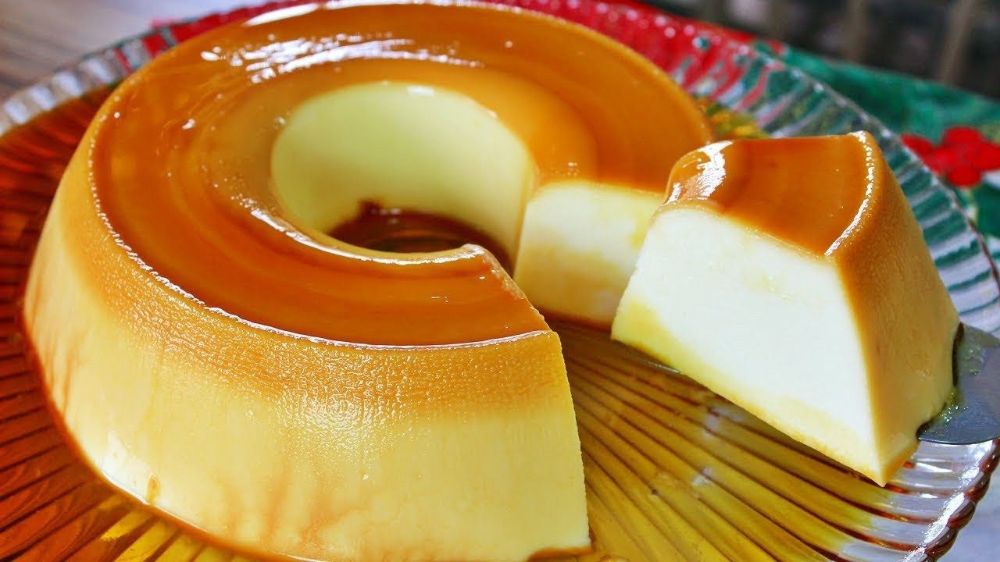

Pudim de leite
Ingredientes
1/2 xícara de chá de açúcar, 2 colheres de sopa de água, 1 lata de leite condensado, 2 xícaras de chá de leite (500 ml), 5 colheres de sopa de Amido de Milho Maizena, 1 ovo, 1 colher de chá de essência de baunilha,
Modo de preparo
Em uma panela pequena, coloque o açúcar e leve ao fogo médio por aproximadamente 5 minutos, ou até o açúcar derreter e formar um caramelo claro. Junte a água e misture bem. Retire do fogo, deixe a calda esfriar levemente e distribua em uma fôrma de furo central (18 cm de diâmetro). Comece pelo centro da fôrma e vá girando-a para que o caramelo possa aderir também nas laterais. Reserve. Em uma panela, coloque o leite, o leite condensado, o ovo, o amido de milho MAIZENA® e a essência de baunilha. Misture bem os ingredientes até a MAIZENA® dissolver. Cozinhe em fogo médio, mexendo sempre, por 3 a 4 minutos, ou até ficar cremoso. Disponha na forma reservada, deixe esfriar e leve à geladeira por 4 horas, ou até ficar firme. Desenforme o pudim sobre um prato e sirva em seguida.
Moça gelada
Ingredientes
1 lata de leite condensado, 1/2 xícara de leite em pó, 200 ml de chantilly, 10 biscoitos de chocolate com recheio de baunilha, biscoitos a gosto;
Modo de preparo
Com uma panela no fogo desligado, coloque o leite condensado, o creme de leite e a xícara de leite em pó, Misture bem , Ligue o fogo, misture e deixe aalí até engrossar , Leve à geladeira po 30 minutos, Em outro recipiente, coloque o chantilly e misture o recheio que estava na geladeira, Junte os 10 biscoitos de chocolate triturados , Misture tudo muito bem e coloque em uma forma, Finalize com mais biscoitos por cima e leve à, geladeira por 3 horas, Sirva!
Bolo de prestigio

Ingredientes
óleo1/2 xícara (chá) de óleo, leite1 xícara (chá) de leite, açúcar1 xícara (chá) de açúcar, chocolate em pó1 xícara (chá) de chocolate em pó, farinha de trigo2 xícaras (chá) de farinha de trigo, fermento1 colher (sopa) de fermento, coco raladococo ralado a gosto, leite de coco1 garrafa de leite de coco, leite1 xícara (chá) de leite, açúcar3 colheres (sopa) de açúcar, leite condensado1 lata de leite condensado, margarina1 colher (sopa) de margarina, coco ralado100 g de coco ralado, margarina3 colheres (sopa) de margarina, açúcar8 colheres (sopa) de açúcar, chocolate em pó2 colheres (sopa) de chocolate em pó, leite2 xícaras (chá) de leite,
Modo de preparo
Bata no liquidificador, os ovos, o óleo e o leite por 3 minutos e reserve. Em um recipiente, misture o açúcar, o trigo, o fermento, o chocolate e o coco ralado a gosto. Despeje sobre a mistura do liquidificador e mexa até que a massa fique consistente. Despeje a massa em uma forma untada e leve ao forno médio, preaquecido, por 30 minutos ou até que ao enfiar um garfo, este saia limpo. Deixe esfriar, corte ao meio e reserve. Em um recipiente, misture o leite de coco, o leite e o açúcar e despeje sobre a massa cortada ao meio para umedecê-la. Em uma panela, leve o leite condensado, a margarina e o coco ralado ao fogo até desgrudar do fundo e recheie o bolo. Cubra com a outra metade da massa, faça alguns furos com o garfo e despeje mais calda. Leve a margarina, o açúcar, o chocolate em pó e o leite ao fogo até obter uma consistência firme e cubra o bolo. Leve a geladeira por aproximadamente 45 minutos.